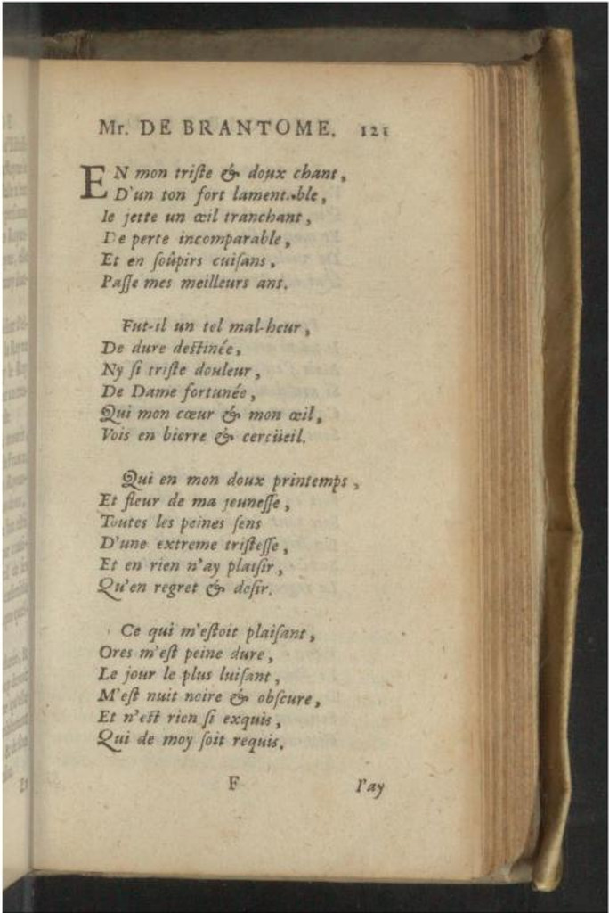
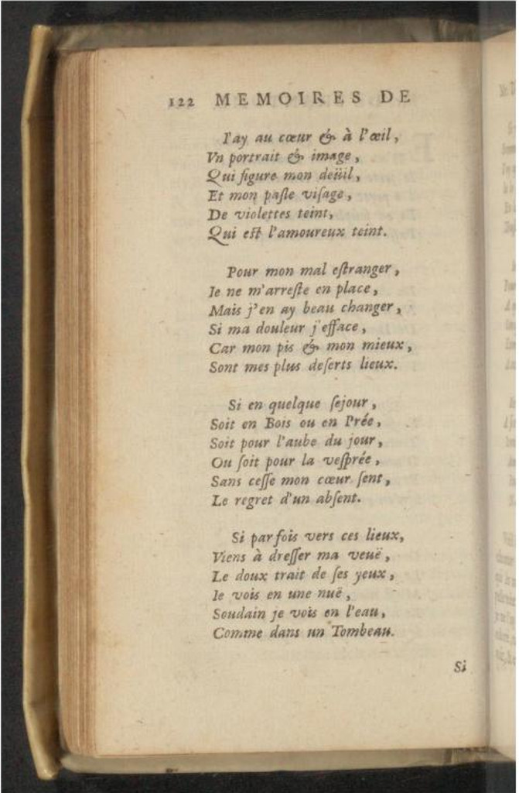
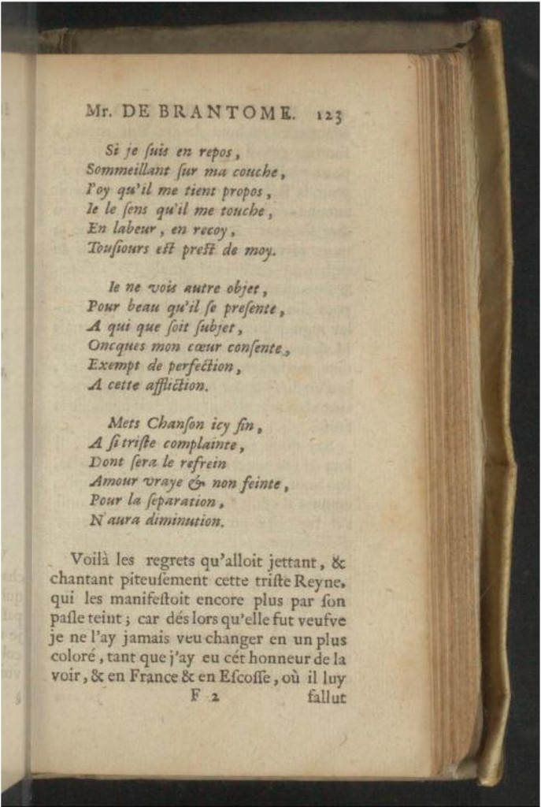

Select versions to display:
Image
Transcription
Translation
| Images | Transcription | Translation |
|---|---|---|
|  |
En mon triste et doux chant, D'un ton fort lamentable, Je jette un deuil tranchant, De perte incomparable, Et en soupirs cuisans, Passe mes meilleurs ans.
Fut-il un tel malheur De dure destinée, N'y si triste douleur De dame fortunée, Qui mon coeur et mon oeil Vois en bierre et cercueil,
Qui en mon doux printemps Et fleur de ma jeunesse Toutes les peines sens D'une extresme tristesse, Et en rien n'ayplaisir Qu'en regret et desir?
Ce qui m'estoit plaisant Ores m'est peinedure; Le jour le plus luisant M'est nuit noire et obscure. Et n'est rien si exquis Qui de moy soit requis. |
In my sad and sweet song, With its powerful and pitiful tone, I project a biting lament Of incomparable loss, And in my bitter sighs, Live out my best years.
Was there such a tragedy Of fated harshness, Or such doleful sorrow For a well-to-do lady Than what my heart and my eye See on the bier and in the coffin
That in my sweet Spring And flower of my youth, All the pains experienced Due to an extreme grief, And having no pleasure Only regret and longing?
What was pleasing to me, Now is hard and distressing; The most brilliant day Is night for me, black and sombre. And nothing, however exquisite It may be, is of any value to me. |
|  |
J'ay an coeur et à l'oeil Un portrait et image Qui figure mon deuil Et mon pasle visage, De violettes teint, Qui estl'amoureux teint.
Pour mon mal estranger Je ne m'arreste en place; Mais j'en ay beau changer, Si ma douleur n'efface; Car mon pis et mon mieux Sont les plus deserts lieux.
Si en quelque séjour, Soiten bois ou en prée. Soit sur l'aube du jour, On soit sur la vesprée, Sans cesse mon coeur sent Le regret d'un absent.
Si parfois vers ces lieux Viens à dresser ma veue, Le doux traict de ses yeux Je vois en une nue; Ou bien je le vois en l'eau, Comme dans un Tombeau. |
I have in my heart and in my mind's eye A portrait and a likeness Which represents my mourning, And my pallid face is Stained with violets, Which is the lover's colour.
Like a vagabond, I can't stop in one place, But I need to alter If my woe is to be lessened. For my worst and my best Are my most lonely places
If on some outing, Be it in the woods or meadow, At the dawning of the day Or in the evening, Constantly in my heart I feel Regret for the absent one.
If sometimes, towards the heavens My attention is directed, The soft features of his eyes I see in a cloud, Or else I see them in water As in a sepulchre. |
|  |
Si je suis en repos Sommeillant sur ma couche, J'oyqu'il me tient propos, Je le sens qui me touche: En labeur, en recoy Tousjours est près de moy.
Je ne vois autre object, Pour beau qu'il présente A qui que soit subject, Oncques mon coeur consente, Exempt de perfection A cette affection.
Mets, chanson, icy fin A si triste complainte, Dont sera le refrein: Amour vraye et non feinte Pour la separation N'aura diminution.[9] |
If I am resting, Dozing on my bed, I hear him converse with me, I sense that he touches me; At work, recreation, Always he is near me.
I see no other object As beautiful as he, Whatever the subject Ever my heart consents, Lacking perfection To this affection.
Here my song ends, Such a sad lament, Whose refrain will be Love true and unfeigned By separation Will never be diminished. |
{kind=link}
{kind=link}
{kind=link}